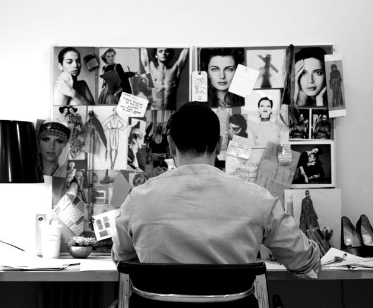

We live in a new world. We are looking at things differently, thinking about everything in a new way.

TRIBUNE STANDARD
[tribyoōn] A raised platform from which a speaker may address an audience / champion of the people.
[standərd] A level of quality or attainment.
With a nod to seventies sportswear, Tribune Standard strikes a balance between utilitarian design and crafted flourishes. We feel passionate about the art of making clothing—details like tailoring, fit and finish that get overlooked too easily in the age of fast fashion and celebrity labels. It's these age-old traditions that make an item unique and have lasting style, so we're partnering with both large and small manufacturers that match our enthusiasm for the subtler things. In our quest to make beautiful clothes in the most responsible way, we take pride in our partnerships, from the Bolivian knitting cooperative that is making our hand knit sweaters for fall 2011 or our team of local pattern makers and artisans. With all the choices out there, we're striving for integrity, a focus on craft and a refined sensibility. Tribune Standard is aiming to bring something more to the table, the balance, the precision and thoughtfulness of design. It's about creating your own style and making choices that fit the life you want to live.
TAWFIK MOUNAYER
Over the past decade and a half, Tawfik Mounayer has earned his elegantly embroidered stripes working for some of America's most recognizable sportswear brands.
Most recently serving as a vice president of design at Liz Claiborne, he has also had stints at Gap, Ann Taylor as well as the successful Isaac Mizrahi for Target collection. The charismatic designer likens his American sportswear and Seventies glamour penchant to a love child between Claire McCardell and Yves Saint Laurent - with Halston playing the role as godfather. Born in Israel but raised in upstate New York since the age of six, it was the bright lights of Manhattan that left a lasting imprint and ultimately led him to Seventh Avenue, first as a student at Parsons School of Design and later as a designer. Briefed on all things pop culture, peppered with a thorough understanding of fashion history, Mounayer draws on his innate designer sensibility and calculated experience to make clothes held to a new standard. A Tribune Standard.